CNC Machining
Welcome to Crimson Racing’s guide to CNC machining. This guide is for members who are seeking to learn about how we make things. CNC machining is just one process in the manufacturing of a racecar along with welding, fabrication, and composites. But, more often than not, each of those other processes start with CNC Machining. For example, all of the Aero molds started off as blocks of foam before being CNC’d into the shapes of our wings and body work. CNC Machining is a big reason why we are able roll a brand-new car out of our shop every year. That being said, it is important that everyone operating our CNC equipment is fully trained on the process, always operating with safety as their #1 priority, and is willing to learn everyday no matter their experience with the process.
Warning
This is just a guide. The purpose of this document is to guide your learning of CNC machining and everyone’s experience will differ. While the completion of the tasks in this guide will grant you access to our CNC shop, it does not mean you’ve mastered the process. You must continue to learn and ask questions every time you start up the machine.
CNC Shop Tour
This will be your very first step to becoming certified to run our CNC equipment. The tour will be given by Jack Terrell, the current Manufacturing Lead. You must message on Teams to schedule this tour. This will be a basic overview of our space and equipment along with sharing any prior experience or understanding of machining. Once you knew where the CNC shop is and what kind of processes we have you can move on.
Safety
Machining is very dangerous and can be deadly when not following proper safety precautions in the shop. High powered motors, sharp tooling, heavy material, and slippery surfaces are all examples of hazards in a CNC shop. It is important to always follow posted safety rules and to always be on the watch for possible hazards in the shop. If you see any hazards or see a fellow student not abiding by, or disobeying, any safety rules, step in, make sure they’re aware of it, and try to correct their actions. They may not know they’re doing something that can potentially be dangerous. If you’re ignored, or the issue persists, you may escalate to the appropriate lead, manager, or faculty/staff member. Any incidents caused by negligence of safety rules may result you or your team being temporarily prohibited from using CNC equipment. Please review and be familiar with the following safety documents.
CNC Shop Safety Rules Poster
CNC Lathe Safety Guidance
CNC Mill Safety Guidance
As a real-life example, OSHA publishes all incident reports made to them on their website. The following links are real reports of machining related incidents. Please read through these reports to understand the danger that is present when not following safety guidelines. Also understand that while machining is inherently dangerous, all incidents can be avoided by following the proper safety measures.
Employee’s Fingertip Is Amputated By Milling Machine
Employee Injured When Sleeve Entangled In Cutting Mill
Employee Is Killed When Arm Is Caught In Lathe
Employee Suffers Fractures When Shirt Is Caught In Lathe
Before moving on, watch this video with Titan from Titans of CNC. Get familiar with Titan as this guide will borrow from their online training course.
Introduction to CNC Mill Tooling
Watch this video from the Haas Certification Program about the basics of the Haas CNC Mill. In our shop we have a Haas TM-2P 3-axis mill. It is an entry level tool room mill that is capable of movement 3 axis (x, y, and z). It has a 6,000 rpm spindle and can automatically cycle between 10 stored tools. Although it is an entry level mill, it is still plenty capable within its limits. As you learn more about the machine and start to use it, you’ll learn where these limits are and how you can work around them and how to maximize the capabilities of our machine.
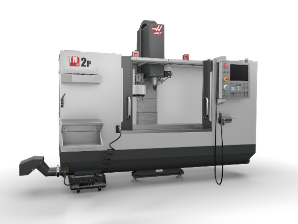{kind=link}
Model of the Haas TM-2P
In order for the machine make cuts, it uses a series of tools that are specialized depending on the type of cuts you are making.
Endmill
The endmill is the most general use tool available. It can be used for profiling, pocket clearing, boring, slotting and finishing. It comes in many different diameters, lengths, flute counts, and flute angles. Each of those features determine which operation(s) the endmill will work best for.
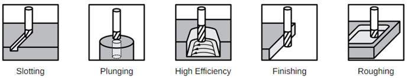{kind=link}
A common endmill
Drill
Drills used in machining and CNC are usually very similar to the ones used in hand drills. They come in many lengths and diameters in order to account for sized holes. Drills can only cut holes that are the same size as its diameter. They can also only plunge into the material, no side milling like an endmill. Since machining drills and hand drills are so similar, please use the designated drills for the job you are doing.
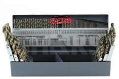CNC Drill Index
Reamer
Reamers are very similar to drills, but can’t make the initial hole on its own. Reamers only have cutting edges in the outer diameter of the tool. The purpose of the reamer is to create holes with a very precise diameter. These are not needed on all parts but come into use when machining frame jigging and parts that use dowel holes.
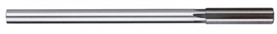CNC Reamer
Spot/Center Drill
Center Drills are used to create a small ‘divot’ on the face of a part which acts as a guide for a following drill. This ‘divot’ centers the tip of the drill in the precise location of the hole. This essentially removes any drill “walk” and reduces the risk of breaking a drill inside of a hole.
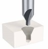Center Drill
Face Mill
The Face Mill is used for facing material, usually the first operation in a program. Facing leaves a very flat, clean face on a surface of a part. These tools have inserts that can be switched out when they become dull.
Face Mill
Edge Finder
The edge finder is used to find the edge of a part. This is important because the machine relies on these edges to establish an origin for its Work Coordinate System. The procedure for this process will be covered in (insert section number).
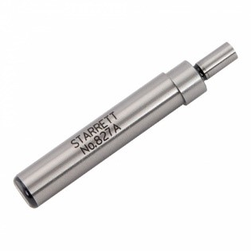edge finder
VPS Probe
The visual probing system is a feature of our mill that allows the machine to semi-automatically probe both the Work Coordinate System and Tool Offset System. This system is made up of the work probe and Optical Tool Setter (OTS). The procedure for this process will be covered in (insert section number).
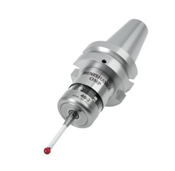 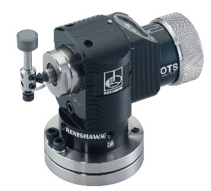{kind=link}
{kind=link}
A VPS Probe (left) and an OTS Pedestal (right)
Axis of Movement
As mentioned before, our Haas TM-2P is a 3-axis mill. This means it can move in the X, Y, and Z. Watch this Titans of CNC video explaining axes of travel and machines with 4 and 5 axes of travel.
Feeds and Speeds
Feeds and Speeds refer to the linear speeds at which the table and spindle move, and the rotational speed of the spindle. Feeds and speeds are very important because they determine the rate at which the tool is removing material from the stock. Feeds and Speeds are based on material properties, depth of cut, type of operation, and type of tool. Baseline feeds and speeds references can be found online, but if you aren’t sure about what to use, check with your Manufacturing Lead before moving on. The wrong feeds and speeds can result in loud chattering, poor surface finish, and broken tools.
Watch this video from Haas about the importance and calculation of feeds and speeds.
Workholding
The strategy for fixing stock to the table in the machine is called workholding. There are many different types of workholding depending on the complexity of the part. The main strategies that we use in our shop are the CNC vise, toe clamps, and soft jaws.
CNC Vise
The Vise is the standard for workholding. It can open up to 9” and is 6” wide. The use of parallels allows you to elevate the stock from the bottom of the vise to accommodate for many different operations. The procedure for vise and parallel set-up will be covered in Vise and Parallel Set-Up.
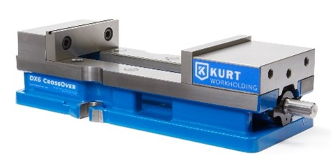 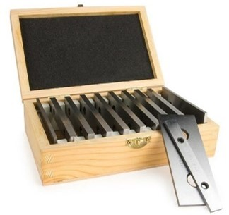{kind=link}
{kind=link}
A 6” Kurt vise (left) and a set of parallels (right)
Toe Clamps
Toe Clamps are used for holding stock to the table of the machine. This strategy is used for thinner, plate style material. They use the T-Slots on the table and a toe connected by a bolt to clamp the stock. They allow for many different shapes and sizes of stock but cause many issues if not set up correctly. Issues include tool colliding with clamp, machining into the table, and part releasing from stock before the operation is finished. The proper set-up procedure will be covered in Toe Clamp Set-Up.
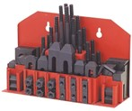 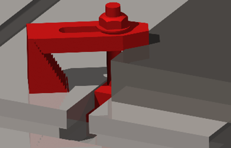{kind=link}
{kind=link}
A toe clamp kit (left) and a toe clamp in use (right)
Custom Fixtures
Custom Fixtures are machined prior to the part they are meant to hold. They are designed to hold the part using critical surfaces and contours of that part. These are about as easy to use a vise set up. Common examples of these fixtures are Upright and Bellcrank workholding.
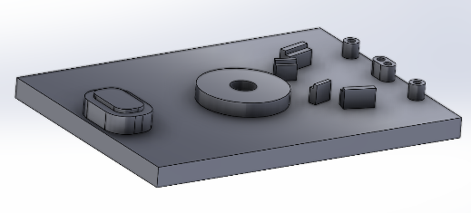CR22 Upright Workholding
Soft Jaws
Soft Jaws are aluminum blanks of the hardened steel “hard” jaws that are already mounted to the vice. Soft Jaws are meant for parts that don’t have any flat contours that a normal vise face can’t grip, essentially any contours that aren’t flat and parallel can’t be gripped by a vise.
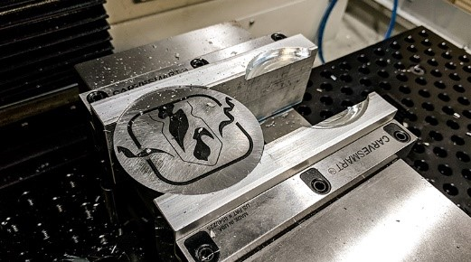Aluminum Soft Jaws
Wrapping Up
Workholding is important because when you’re machining, you want you stock to be as rigid as possible. This allows the cutting tool to cut properly and to prevent the stock from coming loose in the vise. If the stock comes loose in the vise, the tool might cut extra material and/or the stock may eject from the vise. It is also important to account for any workholding when programming an operation to ensure that the tool will not damage any fixtures.
Vise and Parallel Set-Up
Vise and Parallel Set-Up are the most crucial steps to achieving the highest accuracy possible for our equipment. Any chip or bur between any of the critical surfaces of the set up can throw off the flatness of the entire fixture. It is very important to clean every critical surface when setting up the vise and when placing parallels. Watch the following videos related to Vise and Parallel Set-Up.
An important step not mentioned in the videos is seating the material onto the parallels. This is done to ensure that the material is actually flat, not caught on any burs, and/or to make sure the parallels don’t vibrate off of the vise face. To seat the stock, you slowly tighten the vise while tapping the top of the stock on each end with a rubber mallet. This is done every time material is placed into the vise.
Deburring
Deburring is required when setting up material into a vise because it allows the vise to grip the material evenly. It also helps keep the material flat on the parallels. Watch the following video from Titans of CNC.
Toe Clamp Set-Up
Toe Clamps, as mentioned above, are used to mount material to the table of the mill. The first step in the process is setting the designated aluminum sheet directly on the table to provide an isolation between the table and stock. Then, you prepare the bolts and T-Slot mounts by threading the mounts into the bolts. You must use at least 3 Toe Clamps to ensure the stock won’t shift while machining. After the bolts are assembled, place the material on the sheet and position so that the edges of the stock are parallel with the table. Now, you can place the clamps, steps, and nuts onto the bolts. Once all the clamps are in place, tighten nuts while watching the make sure the stock doesn’t move. If the stock remains straight, it is fixed, and you can continue to set your work offsets.
Manual Tool and Work Offsets
Tool and Work Offsets are charts of references the controller uses to tell the machine how long the tools are and the position of the stock on the table. Setting these offsets allows the controller to know where the tip of the tool is and where the origin of the part is. This origin is going to be where everything in the program is based off of. These processes can be done automatically on our mill, but it is still important to understand the process in case you need to troubleshoot the system, or the system get damaged and requires maintenance. Watch these two videos from Titans of CNC that go over setting tool and work offsets manually.
Automatic Tool and Work Offsets
The system that allows us to probe all of our Tool and Work Offsets was discussed in section Introduction to CNC Mill Tooling. It is a very expensive system so be sure to follow every step carefully with probing your offsets. This system allows you to create many more origins on a part than just a corner. These options for origin placement can be found in the controller when the probing tool is active. When probing it is important to always have an eye on the VPS probe when jogging the machine because the machine can’t prevent damage to the tool in Jog Mode. When in probing mode, the machine can stop movement if it senses an unexpected surface. Also, always keep in mind where the probes are in the machine when loading larger stock as to not hit a probe on accident. What the following videos from Titans of CNC to learn how to probe offsets automatically.
Running the Mill
Once you workholding is set, you tools are loaded in the correct pockets and probed, and your part origin is probed, you’re ready to start running. Now it is time to upload your program. Watch the following video on uploading your NC program.
Uploading Program to Controller from USB Device
Now that your program is active in the controller there is one last step before being able to run it. This step is not necessary if you’ve run a similar program prior but is a good precautionary step regardless. This is simulating your program within the controller. This simulates all the tool paths that the program is telling the controller to make while also in the context of the tool and work offsets. This means if the program is asking the machine to move in a coordinate that exceeds a travel of the table, it will error out. It will also error out if there is an invalid code within the program. This is beneficial because you’ll see the error before you run and won’t be stuck with a half-finished part. Watch the following video on simulating your program.
Once you’ve ensured there are no errors in your CNC code, you can start your operation. This does not mean there won’t be any issues while running, it just means there will be no errors. It is very important that you are always alert and watching the machine while it’s running so if there are any issues you can stop the machine before causing any costly damage. While running a new program, always keep your thumb on the feed hold button. This button stops all motion except the spindle. This will allow you to stop the machine quickly if you see an issue or a potential collision. If you need to cut all power from the machine for any reason press the Emergency Stop button on the face of the controller. This will cut all motion, including the spindle, and error out the controller.
Also while running, have the position pane up on the controller by pressing the POSITION button. This will show you 4 different forms of machine position. The two that can help you avoid any collisions are Program G54 and Distance to Go. The Program G54 position will show you where the tip and center of the tool are relative to the origin you set on the part. The Distance to Go will show you the distance the machine needs to travel to execute the current line of code. This is mostly helpful when the tool is plunging down to the material above the vise at the beginning of an operation. If you take all these steps and operate with an abundance of caution and attention to detail, you will be set up for a successful operation.
Introduction to CAM
Now that you have a functional understanding of what a CNC mill is and how it works, it’s time to learn how to get it to do what you want. The controller reads a programming language called G-Code. A pretty basic language made up of a handful of commands that relate to machine functions and X, Y, and Z coordinates. CAM acts as a bridge between a CAD model on your computer to a program with thousands of lines of G-Code. The CAM software that we use as students is called Autodesk Fusion 360. It is quite user friendly and is plenty capable for our CNC equipment.
CAM requires a bit of set up, including the download of our tool libraries (all the tools that we own) and the specific post processor that corresponds with out controller. The post processor is what actually allows Fusion to spit out a G-Code program. This set up can be done with your sub team lead or manufacturing lead.
Once you have these set up on your laptop, you are free to move on to the practical training. This will include how to model the training part in SOLIDWORKS, how to CAM the part in Fusion 360, and how to run the part on the mill (this step will be done with your sub team lead or manufacturing lead).
The successful completion of the two training parts and the Crimson Racing part will conclude your CNC training, unless otherwise specified by your manufacturing lead.
Titan Building Block 1
- SOLIDWORKS
- Fusion 360
- Run Part
See manufacturing lead to schedule time to run part
Titan Building Block 2
- SOLIDWORKS
- Fusion 360
- Run Part
See manufacturing lead to schedule time to run part.
Crimson Racing Part (based on current state of manufacturing)
See manufacturing lead to request a training part.